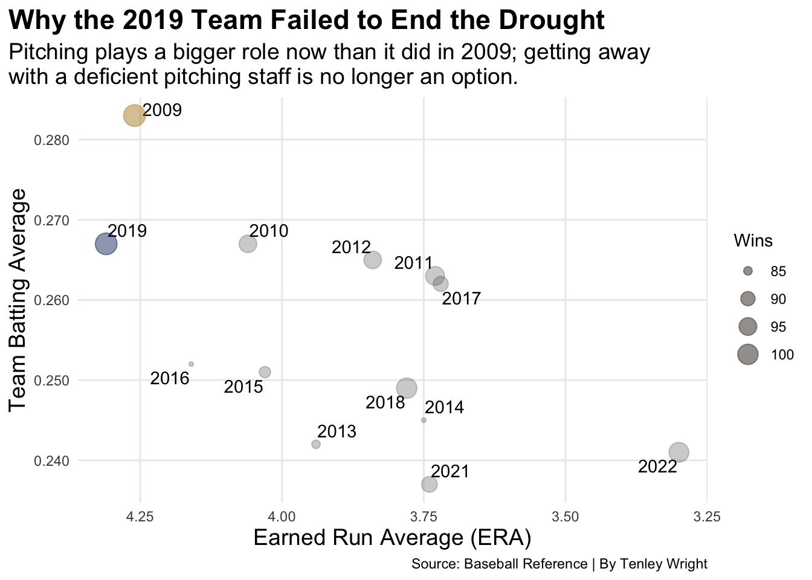
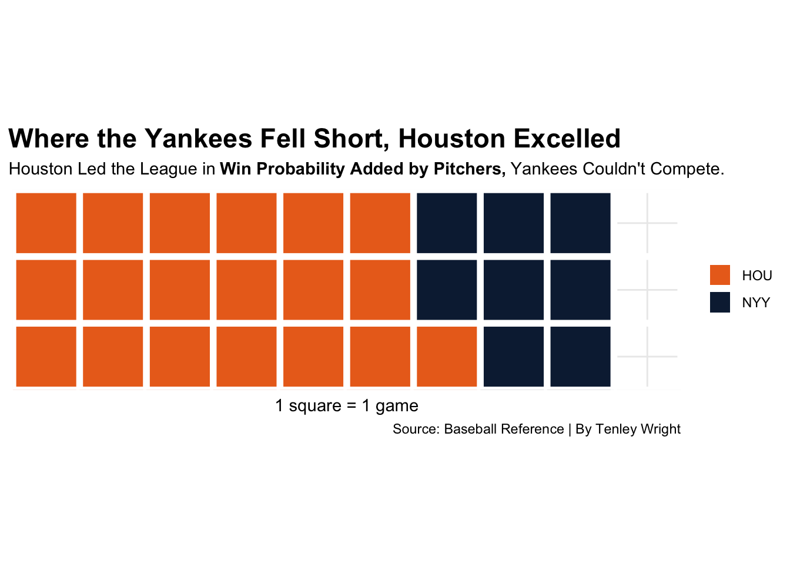
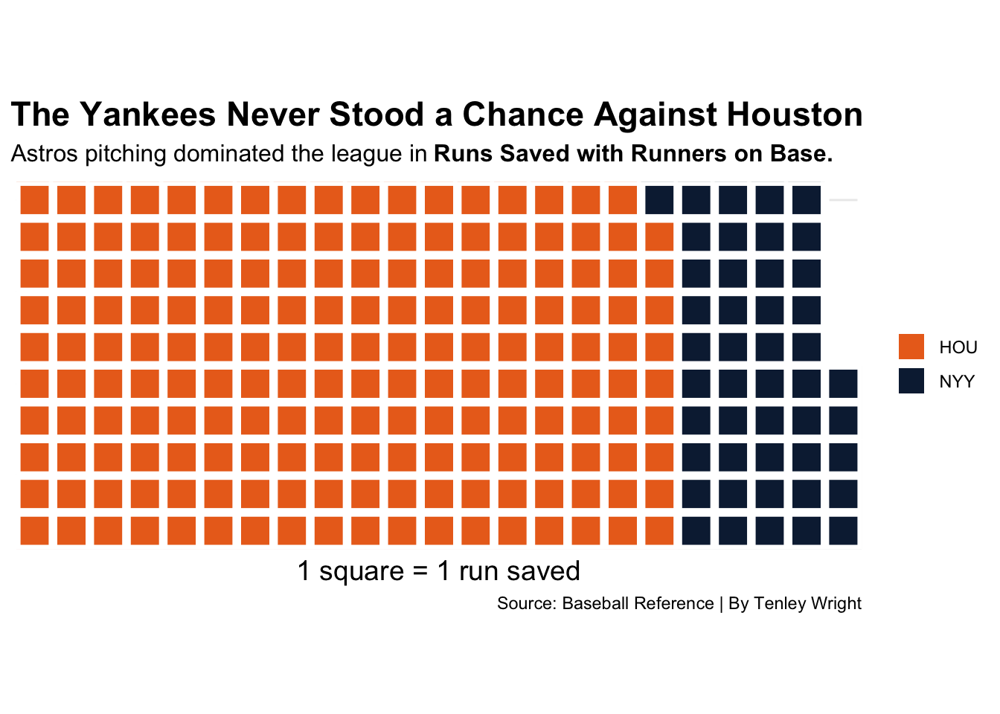

Could the 2019 Yankees Have Ended the Teams World Series Drought?
Baseball
Code
Yankees
Author
Tenley Wright
Published
May 7, 2023
In 2013 My brother was diagnosed with a terrible mental disorder called being Red Sox fan and at the time wasn’t too fond of letting me watch the games with him. As a result, I became a Yankees fan in perhaps the most New York way possible…
Out of spite.
In the early years of my fandom there was a contagious buzz about the ‘chase for 28’ and the Yank’s pursuit of another commissioner’s trophy. I had seen just about every documentary, video clip and newspaper article available on the 2009 championship team and was convinced that it wouldn’t be long before the Yankees would once again be World Series Champions.
What I didn’t know, though, was that that the 2009 championship would mark the beginning of perhaps the worst World Series droughts in franchise history. It’s been 13 years since the Yankees have reached the World Series and in that time 15 of the other 29 teams made an appearance in the Fall Classic. There’s been teams that displayed legitimate championship potential, just to fall short in the Championship Series, continuing the seemingly endless cycle of disappointment that has plagued the Yankees fan base for over a decade.
The drought team that stands out the most is the 2019 Yankees. They were the only team outside of 2009 to place in the top five of wins, team batting average, Runs and fielding runs above average, clearly succeeding on both sides of the ball. Despite being riddled with injuries all season, they still managed to win 103 games, leading the American League.
Code
ggplot() +geom_point(data=NYY, aes(x=ERA, y=BAVG, size=`W`), color="#5c5c5c", alpha=.3) +scale_x_reverse()+scale_y_continuous(labels=comma)+scale_size_continuous(labels=comma, name="Wins")+geom_text_repel(data=NYY, aes(x=ERA, y=BAVG, label=Season))+geom_point(data=NY2009, aes(x=ERA, y=BAVG, size=`W`), color="#EFB21E",alpha=.3) +geom_point(data=NY2019, aes(x=ERA, y=BAVG, size=`W`), color="#003087",alpha=.3) +labs(x="Earned Run Average (ERA)", y="Team Batting Average", title="Why the 2019 Team Failed to End the Drought", subtitle="Pitching plays a bigger role now than it did in 2009; getting away\nwith a deficient pitching staff is no longer an option.", caption="Source: Baseball Reference | By Tenley Wright" ) +theme_minimal() +theme(plot.title =element_text(size =17, face ="bold"),axis.title =element_text(size =14), plot.subtitle =element_text(size=14), panel.grid.minor =element_blank(),plot.title.position ="plot",legend.position="right" )

But just like the ’09 championship team, they struggled with pitching. The 2019 Yankees had the highest Earned Run Average out of all the drought teams and walked the 2nd highest number of batters. When comparing the championship team to the drought team, 2009 finished with the 2nd highest ERA and walked the most batters.
Major league baseball has changed a lot since 2009, though. A quality pitching staff in the 2000’s could put more balls in play and runners on base but rely on a good fielding defense to back them up and a good offense to provide the insurance. And that’s what the 2009 Yankees had.
In 2019, however, pitching had already transitioned into a much more important role. Instead of fielding, Pitchers became the first line of defense when it came to preventing runners from getting on base and scoring. Less balls were being put into play and strikeout rates were on the rise. The Yankees failed to transition into the new era. This became especially clear during the 2019 American League Championship Series, where the Yankees seemed to fall apart at the hands of the Houston Astros.
Code
waffle(WPA, rows =3, title="", xlab="1 square = 1 game", colors =c("#EB6E1F", "#0C2340") )+labs(title="Where the Yankees Fell Short, Houston Excelled", subtitle="Houston Led the League in"~bold("Win Probability Added by Pitchers,")~"Yankees Couldn't Compete.", caption="Source: Baseball Reference | By Tenley Wright" ) +theme_minimal() +theme(axis.text =element_blank(),plot.title =element_text(size =17, face ="bold"),axis.title =element_text(size =11), plot.subtitle =element_text(size=11), panel.grid.minor =element_blank(),plot.title.position ="plot",legend.position="right" )

The two teams were relatively similar offensively, but the 2019 Astros excelled defensively. Houston’s All-Star pitching staff managed a league leading 19.4 WPA, over double that of the Yankees.
Code
waffle(RE24, rows =10, title="", xlab="1 square = 1 Run", colors =c("#EB6E1F", "#0C2340") )+labs(title="The Yankees Never Stood a Chance Against Houston", subtitle="Astros Pitching dominated the League in"~bold("Runs Saved with Runners on Base.")~"",caption="Source: Baseball Reference | By Tenley Wright" )+theme_minimal() +theme(axis.text =element_blank(),plot.title =element_text(size =17, face ="bold"),axis.title =element_text(size =14), plot.subtitle =element_text(size=12), panel.grid.minor =element_blank(),plot.title.position ="plot",legend.position="right" )

The Yankees have been around for 120 years, and they pride themselves on their rich history and tradition. It’s easy to get stuck in the past, especially when it was filled with so much success, but as the game is changing, the Yankees are being left in the dust.